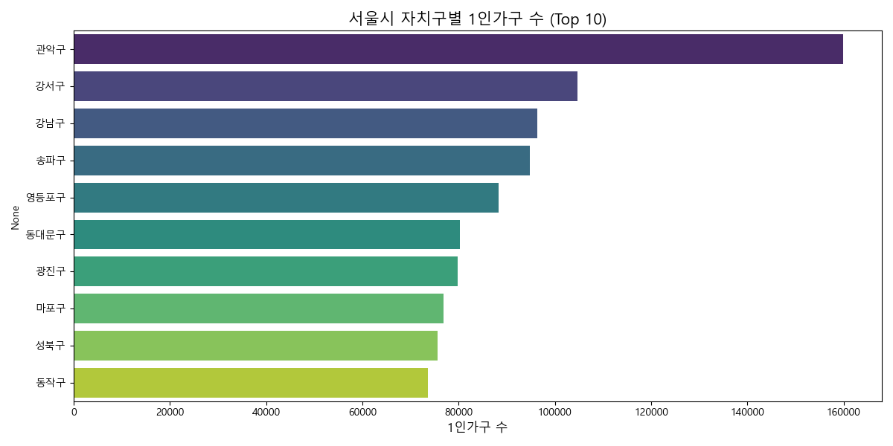
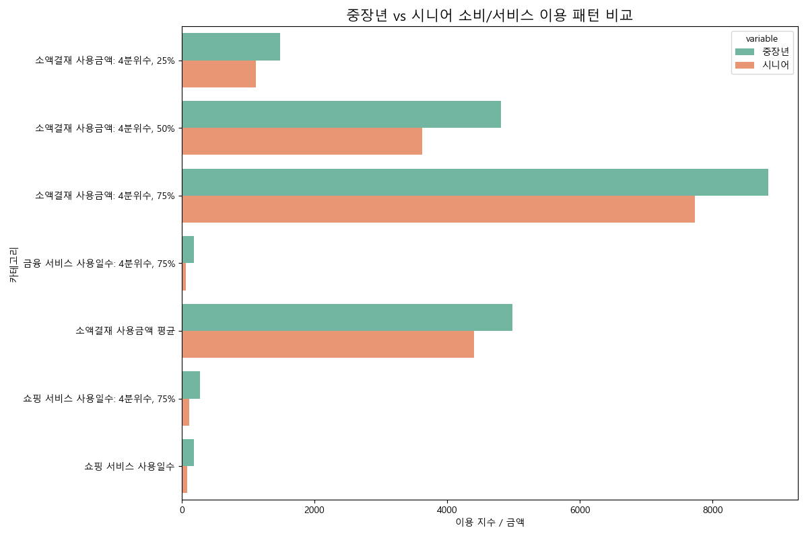
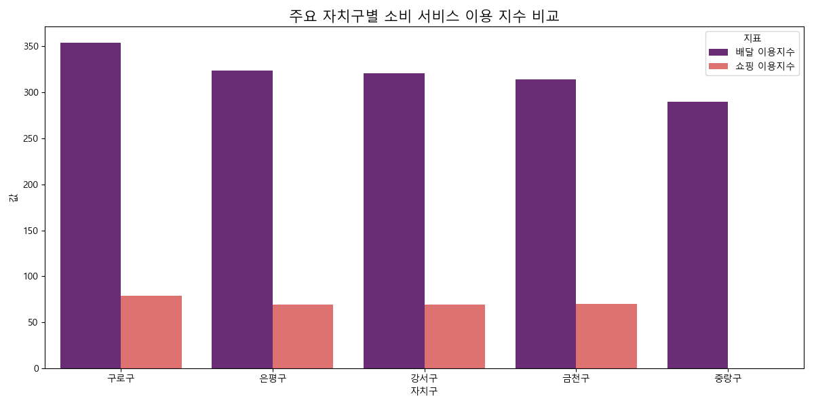
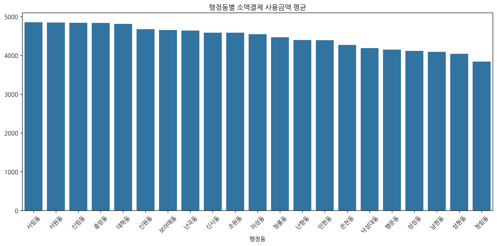
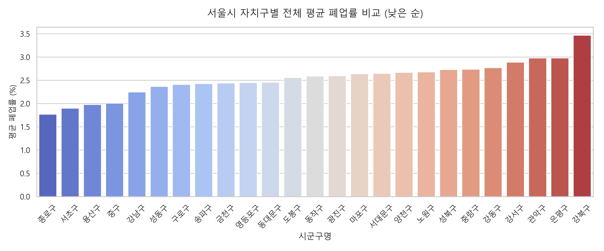
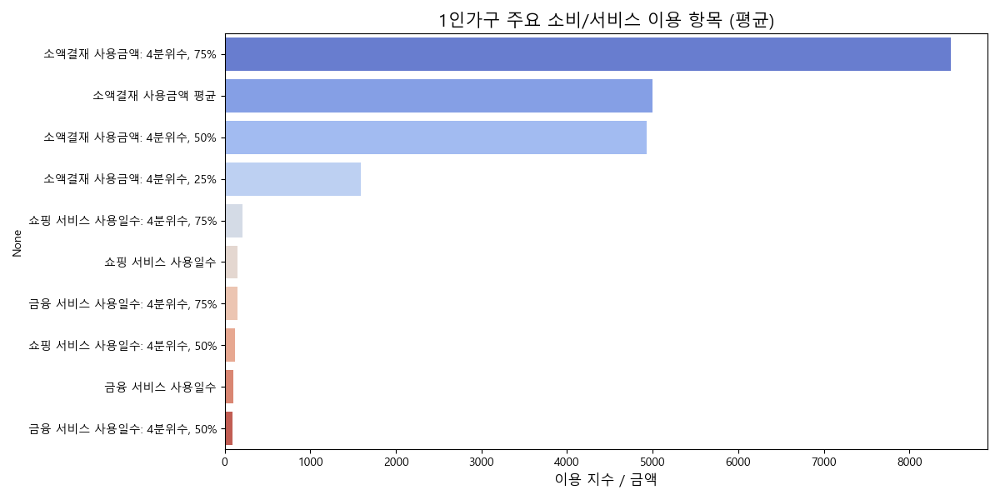

1인가구 상권 성공 창업을 위한 핵심 입지 및 아이템 분석 리포트
1. 프로젝트 개요
본 프로젝트는 서울시 상권 데이터를 다각도로 분석하여 1인가구 밀집 지역을 중심으로 성공적인 창업을 위한 최적의 입지와 아이템을 도출하는 것을 목적으로 합니다. 유동인구 규모와 실질 매출액 중 어느 지표에 집중해야 폐업률을 방어하고 성공 확률을 높일 수 있는지 객관적으로 검증합니다.
2. 문제정의 & 가설
- 문제정의: 예비 창업자가 어디에, 어떤 아이템으로 창업해야 생존율(낮은 폐업률)을 극대화할 수 있는가?
- 가설: 단순히 '유동인구가 많은 곳'보다는 '1인가구가 밀집해 있고 실결제 매출액이 높은 상권'이 창업 생존율(폐업률 방어)에 더 유리할 것이다.
3. 분석 설계
- 분석 대상: 서울시 행정동별 상권 데이터 (총 236개 행정동)
- 주요 변수: 1인가구 총계, 지출 총금액, 당월 매출 금액, 총 유동인구, 폐업률, 서비스 업종 등
- 분석 방법:
- 기초 통계 및 탐색적 데이터 분석(EDA)
- 상권 지표 간 상관관계 파악
- 업종별 폐업률 비교 분석을 통한 최적 아이템 도출
4. 분석 결과 시각화
1) 1인가구 배후 수요 및 밀집도

- 관악구, 강남구, 강서구가 1인가구 타겟 창업의 거시적 핵심 권역입니다. 세부적으로는 청룡동, 역삼1동, 신림동, 영등포동이 최상위권입니다.
2) 핵심 타겟 연령층 분석

- 최상위 상권들은 2030 청년층 비중이 압도적입니다. 트렌디한 외식업 및 배달, 무인 시설 창업이 유리합니다.
3) 1인가구 지출 및 소비 카테고리

- 1인가구 밀집도가 높은 상권일수록 지출 총금액이 상승하며, 주로 '음식(외식 및 배달)'과 '식료품'에 소비가 집중됩니다.
4) 유동인구 vs 매출액 (폐업 방어 지표)

- 유동인구가 많다고 무조건 매출액이 높은 것은 아닙니다. 가장 중요한 것은 '상권의 평균 매출액'이며, 이는 폐업률과 강력한 반비례 관계를 보입니다.
5) 데이터 기반 성공 창업 입지 추천 Top 5

6) 추천 상권 내 최적의 창업 업종

5. 인사이트
- 유동인구의 함정: 유동인구 규모보다는 실결제 매출액이 상권의 생존을 결정하는 핵심 지표입니다.
- 주말 방어력: 1인가구 배후 상권은 주말 매출 비율이 안정적이어서 주 7일 현금 흐름 창출이 가능합니다.
- 타겟 세분화: 여성 1인가구 비중이 높은 상권에서 매출 볼륨이 크므로, 디저트/뷰티/브런치 등의 타겟팅이 유효합니다.
6. 전략 Action Plan
- 1순위 타겟 상권 (입지 추천 Top 5): 서교동, 역삼1동, 문정2동, 가산동, 영등포동
- 최적 창업 업종 (아이템 추천):
- 1인 맞춤 외식/배달 (패스트푸드, 1인분 소포장 식당 등)
- 필수 생활밀착형 서비스업 (네일숍, 반찬가게, 세탁소, 미용실 등 폐업률 최저 업종)
7. 결론
유동인구만 많고 비싼 임대료를 요구하는 상권보다는, 실질적인 결제 파이가 보장된 1인가구 밀집 지역의 'A급 이면도로' 점포에서 1인 맞춤형 식음료 및 생활밀착형 서비스업을 창업하는 것이 생존(폐업률 최소화)과 수익성 극대화의 지름길입니다.
8. 팀 역할(R&R) & 회고
- 팀 역할(R&R): (1인 프로젝트 기준)
- 데이터 전처리 및 분석 설계, 파이썬 기반 데이터 시각화 (EDA)
- 분석 결과 해석 및 비즈니스 전략 도출
- 회고: 기존의 '유동인구가 최우선'이라는 창업 통념을 데이터 기반으로 검증해 볼 수 있었습니다. 높은 임대료와 유동인구보다는 실결제 파이와 배후 세대 소비력이 폐업 방어에 더 핵심적임을 깨달은 의미 있는 프로젝트였습니다.
9. Q&A
- Q. 왜 서교동과 역삼1동이 창업 1순위로 추천되었나요?
- A. 두 지역은 1인가구 수가 가장 많을 뿐만 아니라 월평균 매출 금액도 최상위권으로, 실질적인 구매력이 보장되어 있기 때문입니다.
- Q. 향후 추가해 볼 수 있는 데이터 분석은 무엇인가요?
- A. 지역별 임대료 데이터, 그리고 각 업종의 단위 면적당 평균 수익 데이터를 결합한다면 더욱 정교한 ROI(투자 대비 수익률) 기반의 추천이 가능할 것입니다.